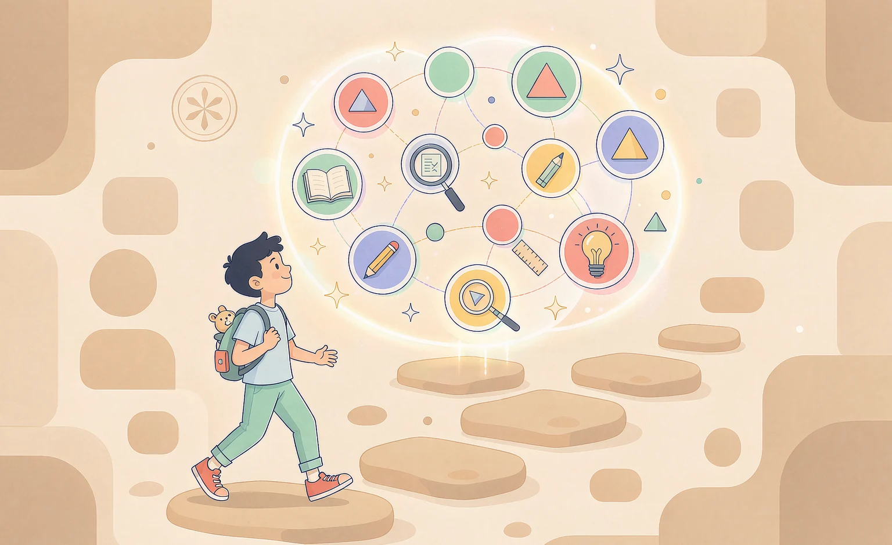

小学 → 高中 · 十科同步
题目不会做？
题目不会做？
一起往回找
答错了不用急。沿着知识点之间的先修关系往回追，找到真正没学会的那一步，再给你一条按顺序排好的补学路径。十科覆盖小学到高中。
3108 个知识点 · 12579 道题 · 全部对齐课标

找到薄弱根因分数的意义 · 五年级
补学路径 · 3 步
01 / 选一科
从你现在学的这一科开始
十科共用同一张知识网络，切换学科时主题色也会跟着变
数学
小学一年级 → 高中选择性必修
870 个知识点3627 道题
语文
小学一至六年级 · 统编版
493 个知识点1972 道题
英语
三年级 → 高中选必四
791 个知识点3164 道题
物理
初中八、九年级 → 高中选必三
269 个知识点1076 道题
科学
小学一至六年级 · 教科版
222 个知识点888 道题
道德与法治
小学一至六年级 · 统编版
159 个知识点636 道题
历史
初中七至九年级 · 统编版
134 个知识点536 道题
地理
初中七至八年级 · 人教版
59 个知识点236 道题
生物
初中七至八年级 · 人教版
66 个知识点264 道题
化学
初中九年级 · 人教版
45 个知识点180 道题
02 / 怎么用
三步，找到该补的那一课
不用从头刷题，先定位，再补。
-
1
选知识点
按学科、年级、册次和章节找到想检查的内容。十科从小学一年级一直到高中选择性必修，搜索也能直达。
-
2
自适应答题
先问目标本身。答错再出一道同级或更容易的题，仍然错才沿着先修关系往回追，不直接把答案给你。
-
3
找到根因和学习路径
标出薄弱根因和不稳的点，并按年级从低到高排出建议补学的顺序，给你一份能直接照着做的清单。
03 / 图谱里有什么
不是题库堆砌，是一张有关系的网
十科合计，数字在打开页面时从当前数据实时统计。
3108
知识点 · 十科合计
4625
先修边 · 谁是谁的基础
12579
题目 · 含图示与解析
774
课标条目 · 2022/2017 版
正在读取当前学科的统计…
本机盲区
根据本机诊断记录汇总的薄弱 / 不稳知识点。只存在这台浏览器，可一键再测。
04 / 按年级进入
从你现在读的年级直接进去
卡片上的数字是该年级真实知识点数。
还没想好从哪开始？
先看一遍演示：配方法。两分钟走完一次完整的答错回溯与路径生成。